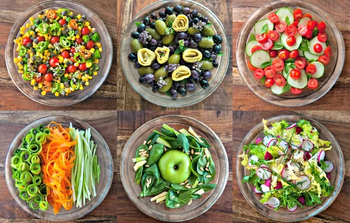

O consumo de alimentos à base de plantas tem crescido significativamente, com mais pessoas adotando dietas vegetarianas e veganas. Essa mudança é impulsionada por preocupações com a saúde, meio ambiente e bem-estar animal. Ler mais

Efeitos do Açúcar na Saúde Mental
Estudos recentes sugerem que o consumo excessivo de açúcar pode estar relacionado a problemas de saúde mental, como ansiedade e depressão. Especialistas recomendam uma dieta equilibrada para melhorar o bem-estar emocional. Ler mais
Importância da Hidratação
A hidratação adequada é essencial para a saúde geral. Especialistas alertam que muitas pessoas não consomem água suficiente, o que pode levar a problemas de saúde, como fadiga e dificuldades de concentração. Ler mais
Alimentos Fermentados e Saúde Intestinal
Alimentos fermentados, como iogurte e chucrute, estão sendo reconhecidos por seus benefícios à saúde intestinal. Eles são ricos em probióticos, que ajudam a equilibrar a flora intestinal. Ler mais
Impacto do Fast Food na Saúde
O consumo frequente de fast food está associado a várias doenças crônicas, incluindo obesidade e diabetes tipo 2. Nutricionistas recomendam alternativas saudáveis e refeições caseiras. Ler mais
.jpeg)
.jpeg)
.jpeg)